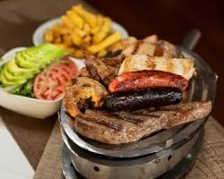

—
Truco: usa carbón de base para el calor y añade pequeños trozos de leña aromática para dar sabor. Nunca uses pino ni maderas resinosas.
Coloca la mano a 10 cm de la parrilla y cuenta los segundos que aguantas:
Organiza la parrilla con zona directa caliente (sellar y dorar) y zona indirecta fría (terminar sin quemar). Acumula todo el carbón en un lado y deja el otro libre.
| Punto | Aspecto | Temp. |
|---|---|---|
| Crudo (Blue) | Centro frío, rojo intenso | 45–50 °C |
| Poco hecho | Rojo en el centro, muy jugoso | 52–57 °C |
| Al punto ✓ | Rosa, jugoso | 57–63 °C |
| Medio | Ligeramente rosado | 63–68 °C |
| Muy hecho | Gris, firme | +71 °C |
Después de sacar del fuego, reposa la carne sobre una tabla 5–15 min tapada con papel de aluminio sin apretar. Los jugos se redistribuyen y el resultado es mucho más tierno.
Corta la carne siempre perpendicular a las fibras musculares. Clave en vacío, chuletón, tira de asado y costillas deshuesadas.